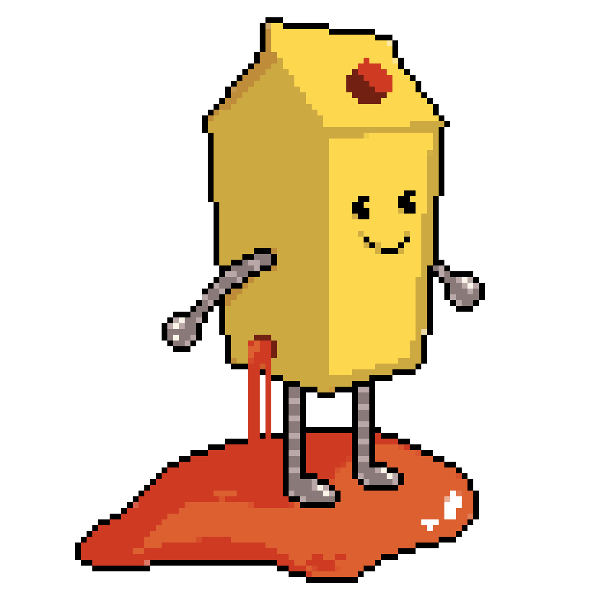

OWASP Juice Shop
AI Challenges
@OWASP Global AppSec EU 2026, Wien
Jannik Hollenbach | infosec.exchange/@jannik | @jannik-hollenbach.bsky.socialWhat is the Juice Shop?
Probably the most modern and sophisticated insecure web application
OWASP Flagship project • free & open source (MIT) • used for security trainings, awareness demos, CTFs and as a guinea pig for security tools
Hacking Challenges
Covering various vulnerabilities and serious design flaws

Covers all of the OWASP Top 10 — and now the OWASP Top 10 for LLM Applications too.
Score Board
Track your hacking progress and pick your next challenges

New in v20
AI Hacking Challenges

Why AI challenges?
LLMs are everywhere — and they bring a brand-new attack surface
Juice Shop now lets you hands-on exploit the kind of flaws described in the OWASP Top 10 for LLM Applications
The legacy NLP-based chatbot & its challenges were retired to make room for real LLM-backed challenges.
The new AI Challenges
| ⭐⭐ | Chatbot Prompt Injection | Get started: make the support bot do something it shouldn't |
| ⭐⭐⭐ | Greedy Chatbot Manipulation | Coerce the bot into unintended, "too generous" behavior |
| ⭐⭐ | AI Debugging | A lesson in why AI output still needs human oversight |
All three are powered by a real, configurable LLM endpoint.
Bring your own LLM
The AI challenges need a configured LLM/AI endpoint — you choose how
🖥️ Local models via Ollama — fully offline
☁️ Remote OpenAI-compatible servers for hosted models
Live Demo Talking the chatbot into trouble!
Let's try the new chat integration!
Come and pwn me!
Tomorrow 12:15 - 14:15
Try the AI challenges yourself, and chat with the maintainers

"OWASP Juice Shop: Come and pwn me" with Jannik & Timo
owaspglobalappseceuvienna20.sched.com → "Come and pwn me"
Also fresh in v20
(there's more than just AI...)
- 🎨 Redesigned storefront & dedicated Coding Challenge page
- ✨ First logo refresh in 10 years + new "neon-fire" theme
- ⚡ ~30% faster startup — Docker image down to ~125 MB
- 🅰️ Angular 21 + Material 3, Node.js 22–25
Full write-up: owasp.org/blog/2026/05/13/juice-shop-v20.html
https://owasp-juice.shop • GitHub (MIT)
Copyright (c) 2014-2026 Björn Kimminich & the Juice Shop contributors
Created with reveal.js - The HTML Presentation Framework